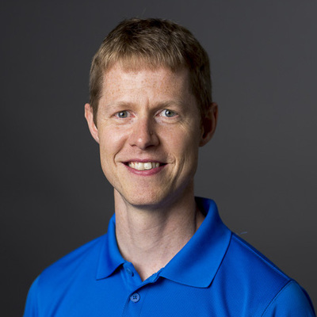

Born July 2, 1978, Copenhagen, Denmark (son of Per Verdich Lund and Nina Møller Lund). Married to Julie Davey Dalsgaard Lund on July 10, 2004.
| 2018 - | ... |
| 2010 - 2018 | Software engineer at Google Inc. in the Danish office in Aarhus where I was the site lead (since August, 2015) and the engineering lead for the Dart project. |
| 2006 - 2010 | Software engineer at Google Inc. working on V8: Google's high-performance JavaScript engine. V8 is used in Google Chrome and in node.js and is freely available as open source software under a permissive BSD license. I was the tech lead for the Crankshaft project that introduced adaptive optimizations driven by type-feedback to V8. |
| 2004 - 2006 | Software engineer at Esmertec AG where I worked on the OSVM™ platform. OSVM is a secure, object-oriented, serviceable, real-time software platform for embedded devices. The platform enables developers to debug, profile, and update code running on embedded devices in the field, vastly improving reliability and development productivity. It was launched as a product in March, 2005. |
| 2002 - 2004 | Co-founder of OOVM A/S. OOVM A/S (Object-Oriented Virtual Machines) was a privately held venture financed company dedicated to creating a much simpler and more reliable software platform for the embedded software market. OOVM A/S was acquired by Esmertec AG in July, 2004. |
| 2000 - 2002 | Software engineer at Sun Microsystems, Inc. where I worked on the CLDC Hotspot™ Implementation. CLDC HI is an open source, optimized Java™ virtual machine that complies with the CLDC specification. It includes dynamic compilation, generational garbage collection, fast synchronization, and unified resource management. |
| 1999 - 2000 | Student programmer at the CPN group at the University of Aarhus where I worked on CPN Tools, an integrated tool for editing, simulating, and analysing Coloured Petri Nets. The user interface is based on advanced interaction techniques, such as toolglasses, marking menus, and bi-manual interaction. See our article published in Petri Nets 2000, 21st International Conference on Application and Theory of Petri Nets. |
| 2001 - 2003 | M.Sc. in computer science from the University of Aarhus, where I wrote my master's thesis, Revolutionizing Embedded Software, with Jakob Roland Andersen. |
| 1997 - 2001 | B.Sc. in computer science from the University of Aarhus. My first part curriculum consisted of mathematics and computer science. |